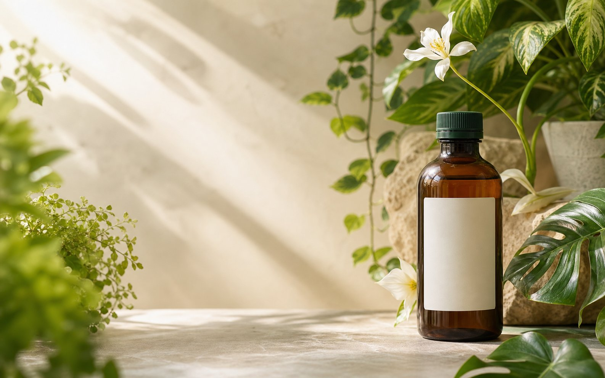

01 / ПИТАНИЕ
Сбалансированный состав
Азот, фосфор и калий в сочетании с аминокислотами, витаминами и гуминовыми веществами.
NPK + биоактивные компоненты
ПИТАНИЕ ДЛЯ ДОМАШНЕГО САДА
Один органический концентрат — для комнатных растений, цветов и крепкой рассады.
ПРОСТОЙ УХОД, КОТОРЫЙ РАБОТАЕТ
Растениям нужно разное. Хорошо, когда забота о каждом начинается с одного понятного решения.
Азот, фосфор и калий в сочетании с аминокислотами, витаминами и гуминовыми веществами.
NPK + биоактивные компонентыПодходит для ухода после пересадки и помогает растениям адаптироваться к новым условиям.
Для регулярной заботыОрхидеи, фиалки, фикусы, пальмы, декоративно-лиственные — и рассада тоже.
Универсальный форматИз флакона 250 мл можно приготовить до 250 литров рабочего раствора.
1 мл концентрата на 1 л воды**Расход рассчитан из указанной производителем концентрации: 250 мл на 250 л рабочего раствора. Используйте по инструкции на упаковке.
ФОРМУЛА СЕМЯЗДРАВ
Состав разработан, чтобы дать растениям комплексную поддержку в удобном жидком формате.
РАСТИТЕЛЬНЫЙ МИР ДОМА
Универсальное удобрение для цветов, зелени и рассады — используйте для полива или опрыскивания.
БЕЗ ЛИШНИХ СЛОЖНОСТЕЙ
Приготовьте раствор нужного объёма и выберите удобный способ внесения.
Остались вопросы?Ориентир для расчёта: 1 мл концентрата на 1 литр воды.
Добавьте удобрение в воду и аккуратно перемешайте раствор.
Подходит для корневой и внекорневой подкормки растений.
Перед применением ознакомьтесь с инструкцией на упаковке. Не превышайте рекомендуемую дозировку.
МАЛЕНЬКАЯ КАПЛЯ — БОЛЬШОЙ ЗАПАС
Укажите нужный объём воды — рассчитаем количество концентрата.
ЗНАКОМЬТЕСЬ — ВАШ ПОМОЩНИК
Семяздрав для комнатных растений, цветов и рассады — жидкая комплексная подкормка для полива и опрыскивания.
Откроется поиск товара на Wildberries. Актуальную цену и наличие уточняйте на площадке.
КОРОТКО О ГЛАВНОМ
Если вашего вопроса здесь нет — загляните в инструкцию на упаковке.
Для комнатных растений, цветов и рассады. В том числе для орхидей, фиалок, фикусов, гардений и пальм.
Флакона 250 мл достаточно для приготовления до 250 литров рабочего раствора. Для расчёта дозировки учитывайте инструкцию на этикетке.
Да, удобрение предназначено для корневого внесения (полива) и внекорневого внесения (опрыскивания).
В описании продукта указан круглогодичный период применения. Частоту и нормы подкормки выбирайте по инструкции на упаковке и состоянию растения.
Нажмите «Найти на Wildberries» — откроется поиск по названию. Перед заказом проверьте, что выбрали нужный объём и продавца.
ВРЕМЯ ДЛЯ НОВЫХ ЛИСТЬЕВ
Начните с простого: немного внимания, воды и правильного питания.
Выбрать Семяздрав